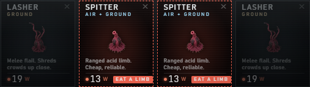
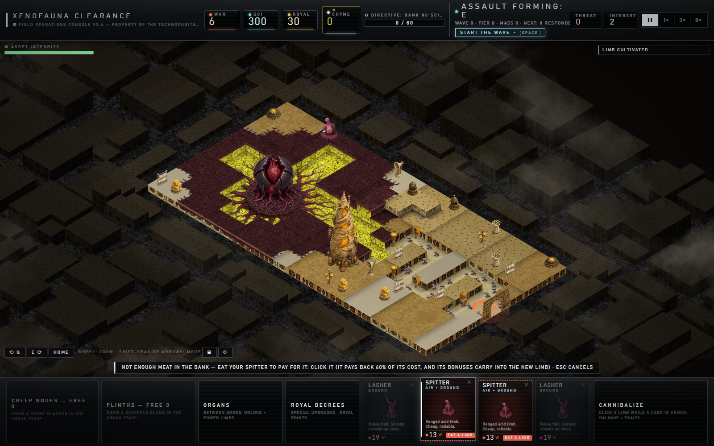

Paying for a limb with another limb
Broodfall, Nov 22 2026, from your playtest note.
Before and after (same hand, 6 war meat in the bank, one Spitter on the board)
| Card state | Before | Now |
|---|---|---|
| Bank pays | normal | normal |
| Only eating a limb pays (Spitter, 13 war: 6 in the bank + 7 back from eating a Spitter) | grey, same as "cannot" | red dashed frame + EAT A LIMB |
| Nothing pays (Lasher, 19 war) | grey | grey |
Now: the hand

Now: picking the Spitter, with the hint line at the bottom

How much a sacrifice loses
Eating a limb gives back 60% of its price, so you lose 40%. That is more than the 25% loss you guessed. You also keep its bonuses: the eaten limb and everything it had inherited carry into the next limb you build. So a sacrifice costs 40% of the meat and nothing of what the limb had grown. That is why the meat refund is lower than you guessed. If it paid back 75% on top of keeping every bonus, eating limbs would be close to free.
The gene Grudge Marrow raises it to 90% back. Mid-wave, the new limb also has to graft (it can't fire, and it takes double damage for a few seconds), which is a second cost.
Technical notes for an engineer or an AI: Sim.sacrificeDonorsFor in src/sim/sim.ts, the card class in src/ui/hud.ts, tests/sacrifice-pay.test.ts.